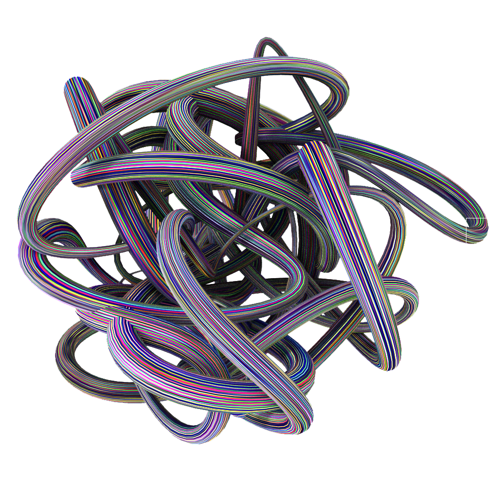
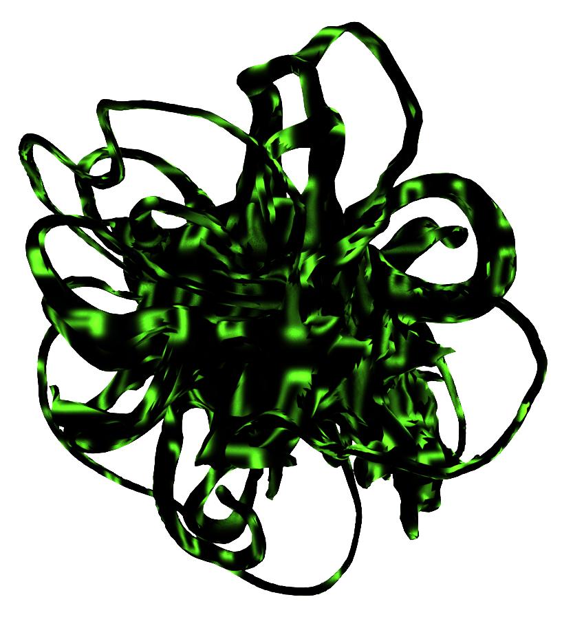
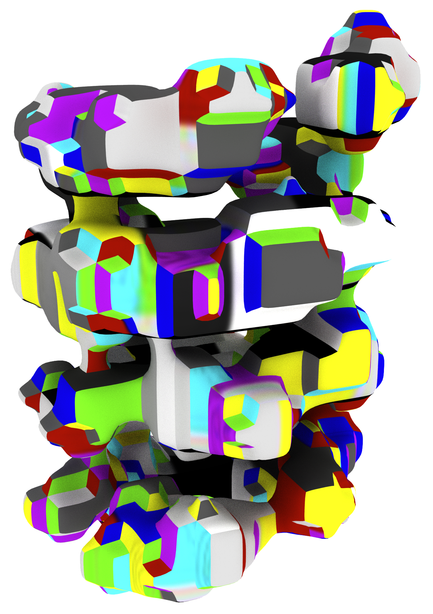
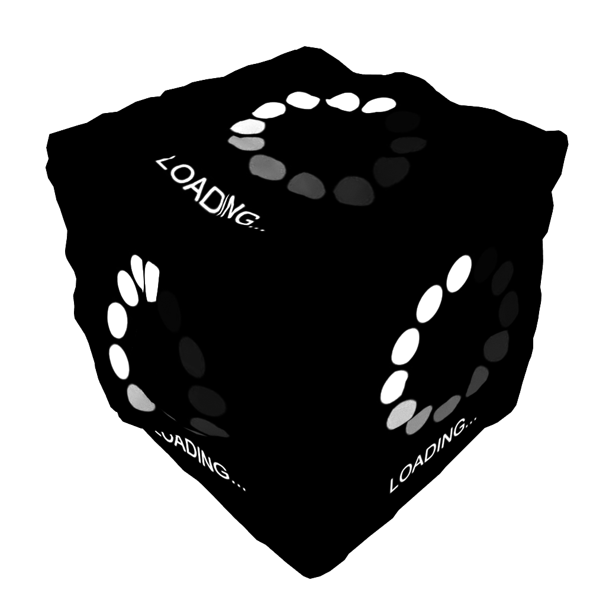
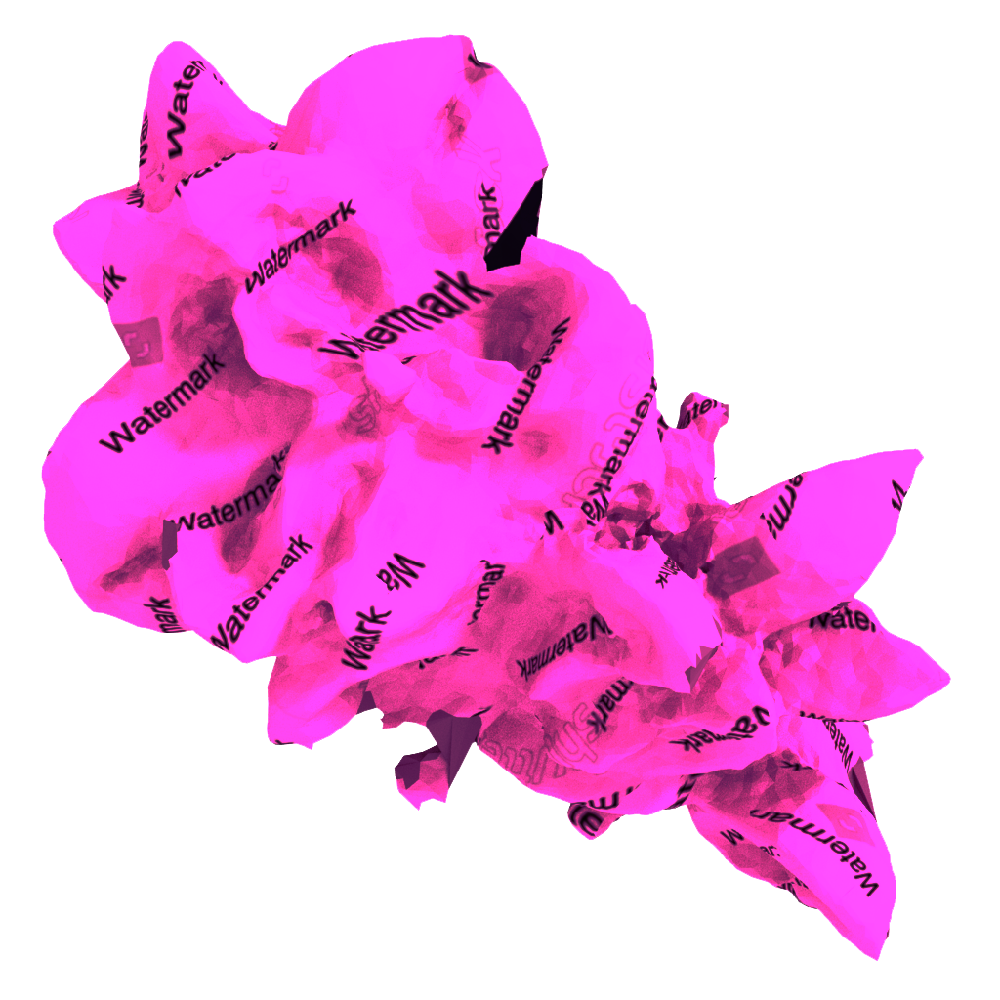

Grey Goo, 1986
The theory of Grey Goo, developed in 1968, is a hypothetical global catastrophic scenario involving molecular nanotechnology in which self-replicating machines consume all biomass on Earth while building more of themselves; a scenario that has been dubbed 'the literal consumption of the ecosystem'. Although theorised decades ago, this idea of a destructive mass can be transposed to today's society in a digitised form.
This digitised form - digital waste - is the idea of online pollution that is devoid of value, usability and need. We simply dispose of it as if by doing so it no longer exists. If we were to collect all the digital waste in this world, would it, like the Grey Goo, be a catastrophic gigantic mass? What types of digital waste are there? This project seeks to explore more about this seemingly impending doom in an age where technology is used almost nonchalantly.
This digitised form - digital waste - is the idea of online pollution that is devoid of value, usability and need. We simply dispose of it as if by doing so it no longer exists. If we were to collect all the digital waste in this world, would it, like the Grey Goo, be a catastrophic gigantic mass? What types of digital waste are there? This project seeks to explore more about this seemingly impending doom in an age where technology is used almost nonchalantly.
Files
Name
Date Modified
Size
Kind
Screenshot-111.png
15 April 1986 at 4:12AM
849KB
PNG image

CCTV_Rec1
19 October 1986 at 10:07PM
923KB
MP4 movie
My-Movie1.mov
08 September 1986 at 6:57PM
129MB
MOV movie
this password already exists
21 January 1986 at 8:01PM
0KB
Plain Text

001101010
21 May 1986 at 4:13AM
9KB
.exe

00:03:56:13
29 February 1986 at 11:11AM
--
MOV movie

LOADING_56%_COMPLETE
29 July 1986 at 3:49PM
???
???

shutterstock-image-2394-LICENSENEEDED
01 March 1986 at 9:23AM
20MB
JPEG image